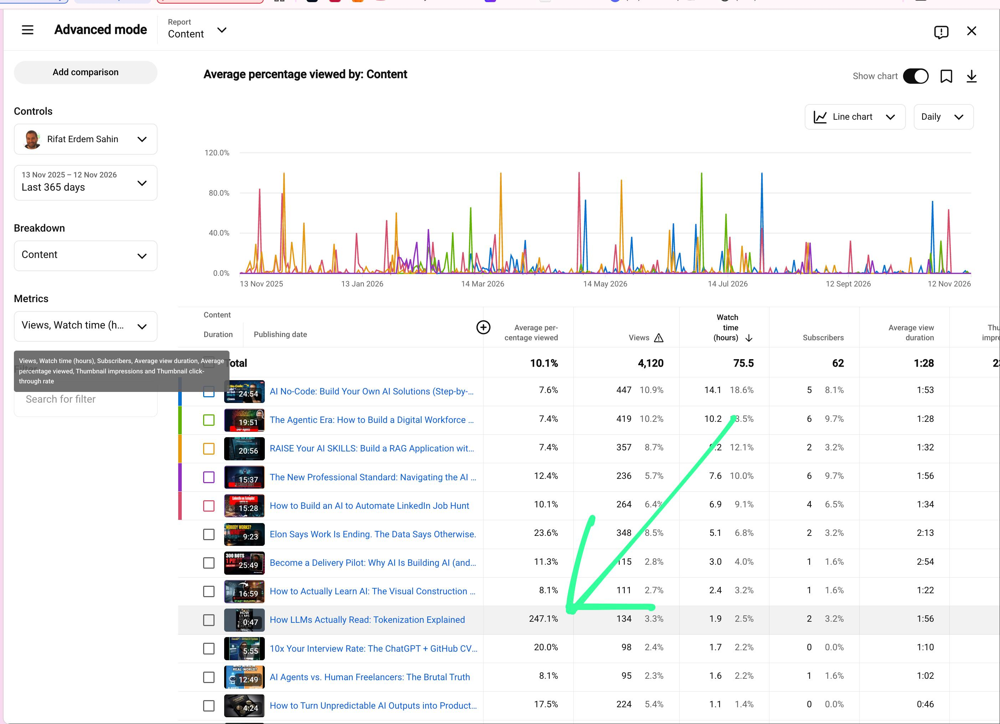

📊 S2-A YouTube Analytics
Why I focus on this video: Day 1 analytics reveal 247.1% average percentage viewed (1:56 on a 47 s short). The retention data that justifies the Day 2 sequel and drives our production blueprint.
YouTube's algorithm prioritizes one metric above all others: Average Percentage Viewed. While the channel's 15–25 minute tutorials average 7.4%–11.3% retention, our 47-second Day 1 short (How LLMs Actually Read: Tokenization Explained) achieved an unprecedented 247.1% average percentage viewed with an average view duration of 1:56 (2.47 loops per viewer). This proves that fast-paced, visually dense, seamlessly looping AI shorts are the channel's single highest-leverage format. Day 2 exists to capitalize on this exact audience appetite.
📊 The Evidence: YouTube Studio Analytics

📸 Figure 1: Advanced Mode YouTube Analytics (Last 365 days). The bright green arrow points directly to Day 1: 247.1% retention, 1:56 average view duration on a 47-second video.
📈 Key Metrics at a Glance
📋 Channel Content Comparison (From Studio Screenshot)
Comparing Day 1 against long-form and medium-form videos across the channel:
| Video Title | Duration | Avg % Viewed | Avg View Duration | Views | Watch Time | Subs |
|---|---|---|---|---|---|---|
| How LLMs Actually Read: Tokenization Explained (Day 1) ⭐ TARGET (DAY 1) | 0:47 |
247.1% | 1:56 |
134 | 1.9 h | +2 |
| Elon Says Work Is Ending. The Data Says Otherwise. | 9:23 |
23.6% | 2:13 |
348 | 5.1 h | +2 |
| The New Professional Standard: Navigating the AI... | 15:37 |
12.4% | 1:56 |
236 | 7.6 h | +6 |
| Become a Delivery Pilot: Why AI Is Building AI | 25:49 |
11.3% | 2:54 |
115 | 3.0 h | +1 |
| How to Build an AI to Automate LinkedIn Job Hunt | 15:28 |
10.1% | 1:34 |
264 | 6.9 h | +4 |
| How to Actually Learn AI: The Visual Construction... | 16:59 |
8.1% | 1:22 |
111 | 2.4 h | +1 |
| AI No-Code: Build Your Own AI Solutions | 24:54 |
7.6% | 1:53 |
447 | 14.1 h | +5 |
| The Agentic Era: How to Build a Digital Workforce | 19:51 |
7.4% | 1:28 |
419 | 10.2 h | +6 |
| RAISE Your AI SKILLS: Build a RAG Application | 20:56 |
7.4% | 1:32 |
357 | 9.2 h | +2 |
💡 The Contrast: A 25-minute video gets ~1.5 to 2.5 minutes of view time (7%–11% retention). A 47-second video gets 1.9 minutes of view time (247% retention). Viewers give you roughly 2 minutes regardless of video length — make those 2 minutes loop twice!
🔍 Why I Focus On This Video: 5 Strategic Takeaways
- 🚀 1. The Algorithmic Loop Threshold (>100% Retention = Viral Distribution)
In short-form recommendation algorithms (YouTube Shorts, TikTok, Reels), retention above 100% is the ultimate gold standard. A view rate of 247.1% signals to the algorithm that viewers are not swiping away — they are looping the content. The algorithm rewards content that keeps users on the platform 2.5 times longer than the video's actual duration. - 🔄 2. Real Viewers Watch 2.5 Times Back-to-Back (1:56 on a 47 s Clip)
On a 47-second short, an average duration of 1 minute 56 seconds proves that viewers did not just watch once: they let it play through 2.47 times. This proves the concept of seamless loop design and high-density visual pacing where every second delivers essential substance. - 🧱 3. The Natural Conceptual Bridge to Day 2
Day 1 was How LLMs Actually Read: Tokenization Explained. It taught viewers that words become integer numbers ('Tokens are just numbers. 9246 is a word'). This creates the immediate, burning question: If words are just numbers, how does an AI know king − man + woman = queen? Day 2 is the natural, irresistible sequel to Day 1's winning narrative. - ⚖️ 4. 47-Second Micro-Education Crushes 25-Minute Overload
The data clearly exposes viewer fatigue on long-form tutorials: 20–25 minute deep dives experience 7.4% to 7.6% average view duration (~1.5 minutes viewed before abandoning). In contrast, a 47-second short captured 1.9 minutes of undivided attention! The audience prefers dense, bite-sized, visual clarity over 25 minutes of talking head screen shares. - 🎯 5. The Exact Retention Blueprint for Day 2 (S2)
Day 2 is engineered directly around the Day 1 analytics:- ⏱️ Hard 45 s runtime limit: Never exceed 45 seconds.
- 🔄 Audio & visual loop: Last line leads into the first ('…how do these vectors talk to each other? Tokens are just numbers…').
- 🥚 Rewatch bait: Token 9246 hidden inside the Queen vector in Scene 4, rewarding viewers who loop.
- 🎞️ Pacing: A visual motion change every 2–3 seconds to reset attention.
To replicate and beat Day 1's 247.1% view rate, Day 2 commits to four strict rules:
- ⚡ Sub-45s duration: Exactly 44.5 s so a 2x rewatch fits comfortably under 2 minutes.
- 🔄 Audio handoff: The final spoken question ("But how do these vectors talk to each other?") flows grammatically into the first hook ("Tokens are just numbers…").
- 🥚 Visual easter egg: The glowing token 9246 returns as a hidden dot inside Queen in Scene 4, rewarding the 2nd loop.
- 🚀 Pacing: Dynamic vector math animation every 2–3 seconds to prevent swipe-away.